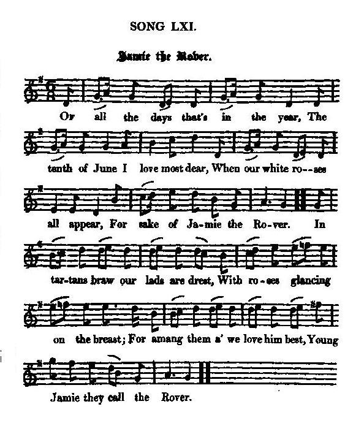

Jamie, the Rover
Jacques dans l'errance
The Chevalier de Saint-George's birthday (born on 10th June 1688)
Three versions - Trois versions
N°1 From "The True Loyalist, page 30, 1779
N°2 From Hogg's "Jacobite Relics", vol 1, page 131, N°61, 1819
N°3 From GS McQuoid's "Jacobite Songs and Ballads" N°27, 1888
Tune - Melodie
"Jamie, the Rover"
from Hoggg's "Jacobite Relics" , volume 1, page 131, N° 61, 1819
Sequenced by Christian Souchon
|
To the Lyrics:
"In Hogg, "Auchindown" takes the place of "Lanarck Town" (3rd stanza) which was a Whiggish and Covenanting centre. The song Auchindown" is, judging by its last stanza, of the later Jacobite period (1745), since the poet is ready to fight for "Our Jamie and our Charlie" . The song in the "True Loyalist" is of the period of the youth of James III/VIII, and, in fact, appears to regard James II/VII as "Jamie the Rover". Hogg, as to the "great black bull", reads: We'll twist his horns out of his skull whereas "The Loyalist" has: But we'll toss his harns out over his skull where 'harns' means 'coarse cloth' or 'brains'. Both versions are contaminated by references to the 'old dog' in connection with Hanover. In short they are variants of a song perhaps dating from 1716, but altered in various ways to suit new circumstances, and arranged by singers and copyits." Andrew Lang in "Scottish historical review" (1909), an account of the "True Loyalist" titled "Jacobite Songs", page 140. As for the third song titled "Jamie the Rover", evidently derived from the same source, its partial similarity ("pillow of lilies and roses") with My Laddie may be attributable to the liberties taken by Hogg with the latter text (see note [1]). |
 Hoggs gives no particulars as to the origin of this tune. The "True Loyalist" inserts a burden "Fal deral, etc." after every fourth line, which seems to point to another tune. |
A propos des textes
:
"Chez Hogg, 'Auchindown' remplace 'Lanarck Town' (3ème strophe) qui était un centre du mouvement Covenantaire. Le chant Auchindown" , à en juger par sa 4ème strophe, date de la dernière période du Jacobitisme (1745), puisque le poète déclare vouloir combattre "Pour Jamie et Charlie . Le chant du "Vrai loyaliste" date de la jeunesse de Jacques III/VIII, mais "Jamie" semble y désigner plutôt Jacques II/VII. Concernant le "grand taureau noir", Hogg lit: Nous lui dévisserons les cornes de la tête (avec "horns"), là où le "Loyaliste" déclare: "Nous lui tirerons la cervelle du crâne (avec "harns" qui signifie "cervelle"). Les deux versions sont contaminées par la référence au "vieux chien" qui désigne Hanovre. Bref, ce sont des variantes d'un chant datant, peut-être, de 1716, mais plus ou moins adapté aux circonstances par les chanteurs et les copistes." Andrew Lang dans "Scottish historical review" (1909), article sur le "Vrai Loyaliste" intitulé "Jacobite Songs", page 140. En ce qui concerne le 3ème "Jacques dans l'errance", provenant à l'évidence de la même source, sa ressemblance partielle ("lit de lis et de roses") avec "Le Jeune homme" est peut-être imputable aux libertés prises par Hogg avec ce dernier texte (cf. note [1]). |

|
N°1 JAMIE, THE ROVER
1. Of all the days that's in the year, The tenth of June I love most dear, When roses and ribbons do appear; Success to young Jamie the Rover. Fal deral, &c. 2. All in green tartan my love shall be drest, With a diamond star upon his breast; And he shall be reckon'd as one of the best, Success to young Jamie the Rover. Fal deral, &c. 3. As I came in by Lanarck Town The drums they did beat, and trumpets did sound The drums they did beat, &c. To welcome young Jamie the Rover. Fal deral, &c. 4. There's some who say he's bastardly born , And others who call him a bricklayer's son; But they are all liars, for he's the true son, Of him call'd Jamie the Rover. Fal deral, &c. 5. There is in London a huge black bull, And he would devour us if he had his will; But we'll toss his harns out over his skull, And drive the old dog to Hanover. Fal deral, &c. 6. I need not wonder at Nature's change, Though he abroad be forced to range ! I'll find him where'er he remains, Young Jamie you call the Rover Fal deral, &c. 7. To foreign lands I'll straight repair, There to find out my dearest dear, For he alone is all my care, Young Jamie you call the Rover Fal deral, &c. 8. In his Royal Arms I'll lay me down, In remembrance of the Tenth of June, And all my pleasure I will crown With Jamie you call the Rover. Fal deral, &c. 9. Tough all my friends should me despise, Yet to his praise my voice I'll raise, For he's a jewel in my eyes, Young Jamie you call the Rover Fal deral, &c. 10. J. and S., I must confess, The thistle and crown, his motto is; Of all the swains he deserves the praise, Young Jamie you call the Rover! Fal deral, &c. From "The True Loyalist", page 30, 1779 |
N°2 JAMIE, THE ROVER
1.1. Of all the days that's in the year, The tenth of June I love most dear, When our white roses all appear For sake of Jamie the Rover. 1.2. In tartans braw our lads are drest, With roses glancing on the breast; For amang them a' we love him best, Young Jamie they call the Rover. (twice) 2.1. As I came in by Auchindown The drums did beat and trumpets sound And, aye, the burden of the tune Was, " Up wi' Jamie the Rover!" 2.2. There's some wha say he's no the thing, And some wha say he's no our king; But to their teeth we'll rant and sing, " Success to Jamie the Rover!" 3.1. In London there's a huge black bull, That would devour us at his will; We'll twist his horns out of his skull, And drive the old rogue to Hanover. 3.2. And hey as he'll rout, and hey as he'll roar, And hey as he'll gloom, as heretofore! But we'll repay our auld black score, When we get Jamie the Rover. 4.1. 0 wae's my heart for Nature's change, And ane abroad that's forc'd to range ! God bless the lad, where'er he remains, And send him safely over! 4.2. It's J. and S., I must confess, Stands for his name that I do bless: O may he soon his own possess, Young Jamie they call the Rover! Source: "The Jacobite Relics of Scotland, being the Songs, Airs and Legends of the Adherents to the House of Stuart" collected by James Hogg, published in Edinburgh by William Blackwood in 1819. |
N°1 JACQUES DANS L'ERRANCE
1. De toutes les journées que compte l'année Celle du dix juin est ma préférée: Quand rubans et roses sont arborés, Pour fêter Jacques dans l'errance. Tra la la etc. 2. Mon champion sera vêtu d'un vert tartan, Sur la poitrine une étoile de diamant, Tous fêteront les mérites éclatants: De Jacques qui vit dans l'errance. (bis) Tra la la etc. 3. Lorsqu'à Lanarck ce jour-là je suis entré J'entendis trompette et tambour sonner. J'entendis trompette, etc. Pour saluer Jacques dans l'errance. Tra la la etc. 4. Selon certains il est né de l'adultère Pour d'autres, un maçon serait son vrai père Il est en dépit des rumeurs mensongères Le fils de Jacques dans l'errance! Tra la la etc. 5. A Londres vit un énorme taureau noir. Nous dévorer tous il semble vouloir Mais, avant qu'Hanovre il retourne voir, Nous le décornerons, je pense. Tra la la etc. 6. Mon cœur souffre au seuil de la belle saison De le voir errant. Quelle trahison! Où qu'il aille, je trouverai sa maison Ce jeune Jacques dans l'errance Tra la la etc. 7. Je vais de ce pas en pays étranger; Où qu'il soit je saurai le trouver. Lui seul m'importe et je n'ai d'autre projet Que mettre fin à son errance. Tra la la etc. 8. Je remets mon sort en ses royales mains, En souvenir ému du dix juin. J'aurai, je le crois, accompli mon destin Lorsque prendra fin son errance. Tra la la etc. 9. Même si mes amis se moquent de moi Ses louanges seront par ma voix Proclamées, car il le mérite cent fois, Ce Jacques qu'on dit dans l'errance. Tra la la etc. 4.2. Le J. et le S. définissent son nom Ses armes sont couronne et chardon, Le prix, c'est à toi que nous le décernons, O jeune Jacques dans l'errance! Tra la la etc. (Trad. Christian Souchon (c) 2009) |
N°2 JACQUES DANS L'ERRANCE
1.1. De toutes les journées que compte l'année Celle du dix juin est ma préférée: Pour fêter une victime exilée, Nous arborons la rose blanche . 1.2. Vêtus du tartan défilent nos garçons, Portant tous cette rose en guise d'écusson, Car tous nous révérons un unique champion: Jacques le fils qui vit dans l'errance. (bis) 2.1. Chaque fois que je passe par Auchindown J'entends trompettes et tambours qui sonnent. Et le même refrain toujours résonne: "A Jacques, notre préférence!" 2.2. Les uns disent: "Mais il n'en est pas question". Les autres: "Ce roi-là, pour sûr, n'est pas le bon." Tel est le chant qu'à la face nous leur lançons: "Vive Jacques qui vit dans l'errance!" 3.1. A Londres vit un énorme taureau noir. Nous dévorer tous il semble vouloir Mais, avant qu'Hanovre il retourne voir, Nous le décornerons, je pense. 3.2. Il aura beau mugir, être furibond Et plus encore qu'autrefois faire des bonds La mise perdue, nous la récupérerons Avec Jacques qui vit dans l'errance. 4.1. Mon cœur souffre au seuil de la belle saison De le voir errant. Quelle trahison! Qu'avec la divine bénédiction Il puisse traverser la Manche! 4.2. Je pense à J.S. Vous savez qui, j'espère. Deux lettres pour un nom qu'entre tous je révère, Qu'au plus vite je désire qu'il récupère, Jacques le fils qu'on dit dans l'errance! (Trad. Christian Souchon (c) 2009) |
|
"This is another song in celebration of the
Chevalier de St George"
's birth-day; and there can be little doubt that it alludes to the very same festival on which
Song N°49
. had been composed, as that likewise is said to be at Auchindown, on
the tenth of June
. This place is likewise mentioned in the old song of
The Hough qf Cromdale
, where it is denominated a town; a term quite improperly applied, save for the rhyme. One is naturally curious to know where this place, so celebrated in Jacobite song for its loyalty, is. It is neither more nor less than an old ruinous castle in Glen-Fiddich, in Banffshire : and it would appear that these festivals in honour of the exiled sovereign had been among the last entertainments given there; for about that very time the castle ceased to be inhabited, and we hear of the knights of Auchindown no more. The building is extremely ancient: no one knows in what age it was built, or by whom. At a very early period it belonged to the Ogilvies; but in the year 1535 it came into the possession of the family of Gordon, and of that name there have been both knights and lords of Auchindown. It stands on a bold and commanding situation, on the top of a green mound that overhangs the Fiddich; and in the central apartment of the castle there is a piece of curious and admirable workmanship, in grand and Gothic style."
[The version N°1 has Lanarck, southwest of Glasgow, instead of Auchindown.] Hogg dans "Jacobite Relics". |
"Voici un autre chant en l'honneur de l'anniversaire du
Chevalier de Saint-Georges
. Il n'est pas douteux qu'il fait allusion à la même cérémonie que le
chant N°49
, dont il est dit qu'elle avait lieu à Auchindown, le
10 juin
. Ce lieu est également évoqué dans
Les prairies de Cromdale
, sous le vocable de "ville", bien peu approprié, si ce n'est pour la rime. On se demande naturellement où est situé cet endroit, tant vanté par les Jacobites pour sa loyauté envers le souverain déchû. Ce n'est ni plus ni moins, qu'un vieux château en ruines du Gen-Fiddich, dans le Banffshire. Il semble bien que ces fêtes en l'honneur du roi en exil, aient été les dernières qu'aient vues cette antique bâtisse. Car c'est vers cette époque qu'elle a cessé d'être habitée et l'on n'a plus jamais entendu parler, depuis, des chevaliers d'Auchindown. Le bâtiment est très ancien: nul ne sait, à vrai dire, de quand il date, ni qui l'a construit. Il a jadis appartenu aux Ogilvy, mais en 1535, il échut aux Gordon qui devinrent de ce fait à la fois chevaliers et seigneurs d'Auchindown. Le château se dresse sur un mamelon verdoyant qui domine fièrement le Fiddich. Dans les appartements aux centre du château, on remarque de curieuses sculptures du style gothique le plus pur."
[La version N°1 a Lanarck à la place d'Auchindown.] Hogg dans "Jacobite Relics". |
|
|
|
N°3 Jamie the Rover, Second Set
Taken from Peter Buchan 's MS. Collection of "Ancient Ballads and Songs of the North of Scotland" (1828).
|
N°3 JAMIE THE ROVER.
SECOND SET 1. Of all the days are in the year, The tenth of June I love most dear, With roses so white, I'll take my delight, Along wi' Jamie the Rover. 2. If good luck and fortune wad once favour me, Again to the abbey whar I wad fain be, And there I'd remain to the day that I dee, Along wi' Jamie the Rover. 3. With the soft down of feathers I'll make him a bed, With the soft down of eider I'll pillow his head, With the music so sweet I'll lull him asleep, And I'll watch all the nicht o'er my Rover. 4. For it's all in green tartan my love shall be drest, With the bonny trews all around his dear waist, And he shall be counted as one of the best To fight for Jamie the Rover. 5. Jamie is black but Geordie is brown, And Jamie's the rightful heir to the crown, But Geordie is an ill-favoured loon, Compared to Jamie the Rover. From GS McQuoid's "Jacobite Songs and Ballads" N°27, 1888 |
N°3 JACQUES DANS L'ERRANCE
DEUXIEME VERSION 1. De toutes les journées que compte l'année Celle du dix juin est ma préférée: Ce jour là chacun se doit d'arborer De Jacques Stuart la Rose Blanche. 2. Si la chance m'accorde cette faveur, J'espère aller dans l'abbaye selon mon cœur Rejoindre, jusqu'à ce qu'il faille que je meure, Jacques le fils qui vit dans l'errance. 3. Je garnirai son lit du plus doux duvet De duvet d'eider pour son oreiller Jouant de la musique pour bercer Son sommeil après tant d'errance. 4. Mon ami sera vêtu de tartan brun Et autour des hanches du kilt il sera ceint Il sera parmi ceux qui combattront demain Pour Jacques aujourd'hui dans l'errance. 5. Jacques est brun, alors que George est châtain. Jacques à qui de droit la couronne revient, Tandis que George n'est qu'un bien triste gredin A côté de Jacques dans l'errance. (Trad. Christian Souchon (c) 2010) |